Benutzerhandbuch
pobvol Service Solution
Power App pssService Board
Stand: 9'25
Deutsch /
English
Serviceaufträge & Erinnerungen
Serviceaufträge sind mit den Kunden abgestimmte Termine. Erinnerungen helfen dabei, zukünftige Servicetermine nicht zu vergessen.
Die Daten werden von Benutzern der Gruppe "Serviceaufträge" in der Power App pssService Board angelegt, angepasst oder gelöscht. Auch die Lösung erstellt automatisch eine Erinnerung, sobald ein Servicebericht der Serviceart Prüfung, Kontrolle, Wartung genehmigt wird.
Gespeichert werden die Daten in den SharePoint-Listen (SP-Listen) "Serviceauftraege" und "ServiceauftraegeP". Serviceaufträge werden zusätzlich in einem Outlook-Kalender gespeichert. Outlook sendet diese Termine dann an die Techniker und wenn aktiviert, auch an die Kunden.
Die App listet nur offene Aufträge / Erinnerungen. Als Offen gelten diese solange, bis für alle zugeordneten Geräte ein Servicevorgang angelegt wurde.
Hinweis: Die Verwaltung Ihrer Servicetermine kann weiterhin wie bisher erfolgen, bspw. in Outlook oder über Excel-Listen. Die App muss nicht dazu benutzt werden. Es hilft aber, da voll integriert.
Top ↑
Das Aufträge-Icon
Auf jedem Screen der App pssService Board finden Sie links das Aufträge-Icon.
Aufträge: Ein Klick auf dieses Icon öffnet den Screen "Serviceaufträge". Die Auftragsübersicht mit der Detailanzeige wird eingeblendet.
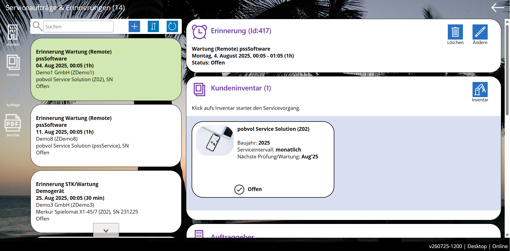
Top ↑
Chart: Offene Serviceaufträge
Der StartScreen der App pssService Board zeigt im Bereich "Serviceaufträge" ein Chart mit den offenen Aufträgen pro Monat.
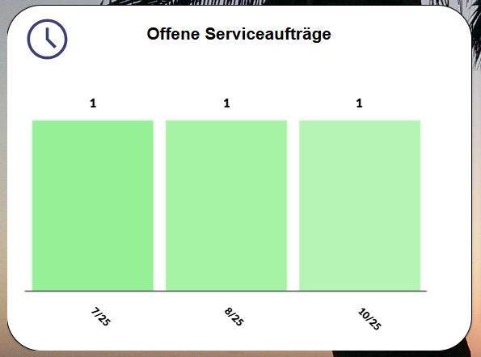
Ein Klick auf einen Monat des Charts öffnet den Screen "Serviceaufträge". Die Auftragsübersicht mit der Detailanzeige wird eingeblendet. Gelistet werden die offenen Aufträge des ausgewählten Monats.
Top ↑
Chart: Offene Erinnerungen
Der StartScreen der App pssService Board zeigt im Bereich "Serviceaufträge" ein Chart mit den offenen Erinnerungen pro Monat.
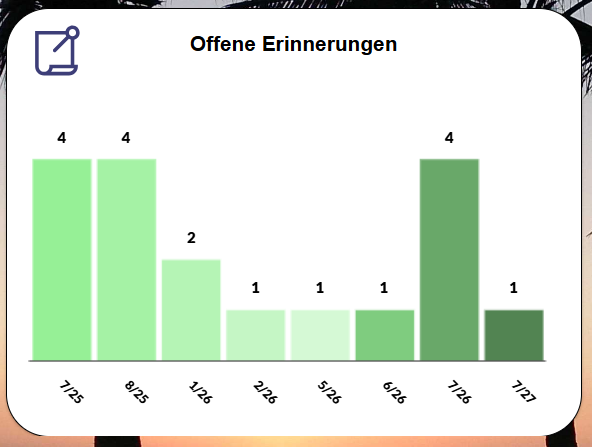
Ein Klick auf einen Monat des Charts öffnet den Screen "Serviceaufträge". Die Auftragsübersicht mit der Detailanzeige wird eingeblendet. Gelistet werden die offenen Erinnerungen des ausgewählten Monats.
Top ↑
Die Auftragsübersicht
Offene Aufträge und Erinnerungen werden in der App
pssService Board auf dem Screen "Serviceaufträge" in einer Übersicht gelistet.
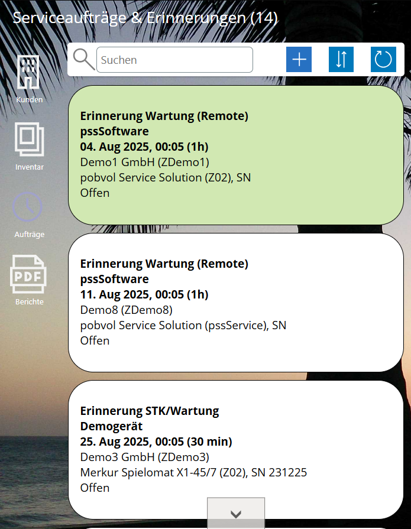
Welche Aufträge / Erinnerungen werden gelistet?
- Erfolgt der Aufruf über das Aufträge-Icon des Startscreens, werden alle offenen Aufträge / Erinnerungen gelistet.
- Erfolgt der Aufruf über das Chart "Offene Aufträge" werden die offenen Aufträge des ausgewählten Monats gelistet.
- Erfolgt der Aufruf über das Chart "Offene Erinnerungen" werden die offenen Erinnerungen des ausgewählten Monats gelistet.
- Ansonsten werden die offenen Aufträge / Erinnerungen des gewählten Kunden / des gewählten Inventars gelistet.
Kann die Liste gefiltert werden?
Die Liste kann gefiltert werden, indem ein Suchbegriff in das Suchfeld eingeben wird. Es werden dann die Einträge gelistet, bei denen der Suchbegriff gefunden wird. Überprüft werden dazu: Gerätetyp, Serviceart, Checkliste, Kundennummer, Kundenname, Kundenort, Anfangszeit, Monat, Jahr, Technikername, Inventarnummer, Hersteller, Inventarbezeichnung (Geräteart), Kundenauftragsdaten (Kundenauftragsnummer, Bestelldatum, Bestellung durch).
Hinzufügen: Mit einem Klick auf dieses Icon, kann ein Auftrag / eine Erinnerung hinzugefügt werden. Das Icon ist nur für Benutzer sichtbar, die zu der App-Benutzergruppe "Serviceaufträge" gehören.
Sortierung: Sortiert wird die Liste nach Anfangszeit auf-/absteigend und Kundenname aufsteigend. Mit einem Klick auf dieses Icon, wechselt die Sortierung der Liste von aufsteigend zu absteigend und umgekehrt.
Refresh: Mit einem Klick auf dieses Icon werden die Daten neu eingelesen.
Mit einem Klick auf einen Eintrag wird der Auftrag / die Erinnerung in der Detailansicht angezeigt.
Top ↑
Die Auftragsdaten
Auftragsdaten zeigt die App
pssService Board auf dem Screen "Serviceaufträge" an.
Container: Auftragsdaten
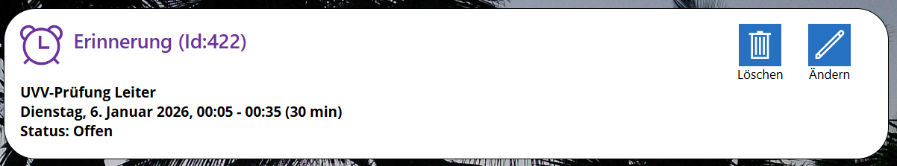
Löschen: Mit einem Klick auf dieses Icon kann der Auftrag / die Erinnerung gelöscht werden. Das Icon ist nur für Benutzer sichtbar, die zur App-Benutzergruppe "Serviceaufträge" gehören.
Ändern: Mit einem Klick auf dieses Icon kann der Bearbeitungsmodus aufgerufen werden. Das Icon ist nur für Benutzer sichtbar, die zur App-Benutzergruppe "Serviceaufträge" gehören.
Top ↑
Das zugeordnete Kundeninventar
Jedem Auftrag / Erinnerung ist mindestens ein Kundeninventar zugeordnet. Es können aber auch mehrere Einträge desselben Typs (bspw. Flurförderzeuge, Leitern, etc.) zugeordnet sein.
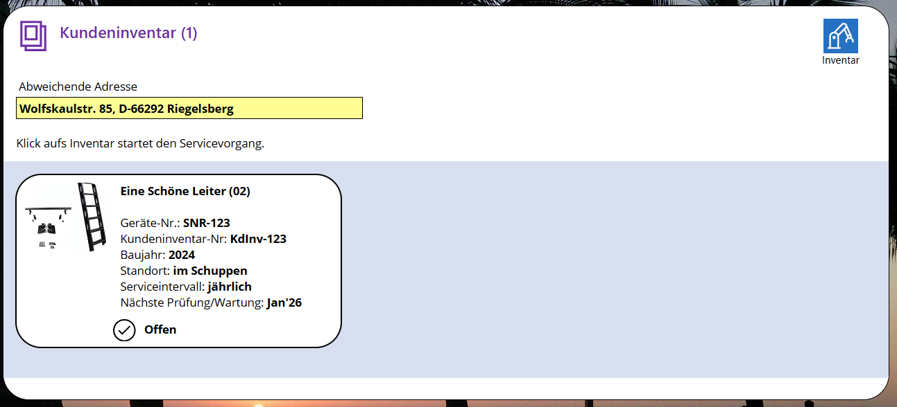
Inventar: Ein Klick auf dieses Icon öffnet den Screen "Kundeninventar". Die Inventarübersicht mit der Detailanzeige wird eingeblendet. Gelistet wird das gesamte Inventar des Kunden.
Wurde bereits ein Servicevorgang angelegt, wird mit einem Klick auf ein Inventar der Screen "Servicevorgänge" mit der Vorgangsübersicht und der Detailanzeige eingeblendet. Ansonsten wird der Screen "Neuer Servicevorgang" eingeblendet.
Top ↑
Der Auftraggeber
Kundendaten zeigt die App
pssService Board auf dem Screen "Serviceaufträge" in den Containern "Auftraggeber" und "Servicekontakt" an.
Container: Auftraggeber
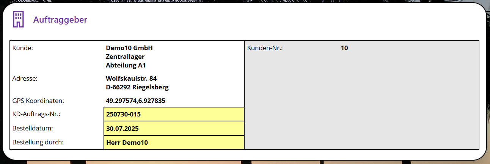
Hinweis: Wenn die Kundenauftragsdaten (Kundenauftragsnummer, Bestelldatum, Bestellung durch) angepasst werden müssen, dann muss der Bearbeitungsmodus des Auftrags / der Erinnerung aufgerufen werden. Dazu nach oben scrollen und das Ändern-Icon wählen.
Container: Servicekontakt
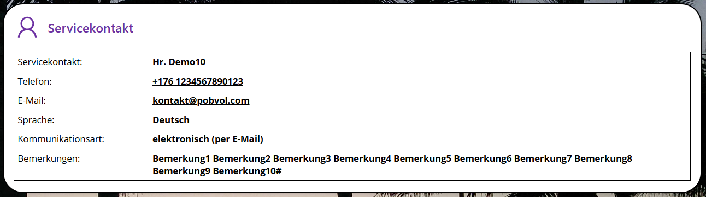
Top ↑
Anlagen
Anlagen zeigt die App
pssService Board auf dem Screen "Serviceaufträge" in dem Container "Anlagen" an.
Container: Anlagen
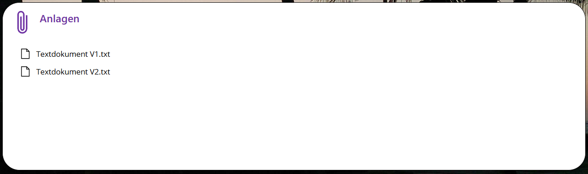
Top ↑
Einen Serviceauftrag / eine Erinnerung anlegen
Auf dem Startbildschirm der App pssService Board die Servicekunden aufrufen. Die Servicekundenübersicht mit der Detailanzeige wird eingeblendet.
In der Übersicht den Kunden suchen und auswählen. Ist der Kunde nicht vorhanden, muss der Kunde in der App durch einen App-Admin erfasst werden.
Inventar aufrufen. Die Inventarübersicht mit der Detailanzeige wird eingeblendet.
In der Übersicht das Inventar auswählen. Ist das Inventar nicht vorhanden, muss es in der App durch einen App-Admin erfasst werden.
Aufträge aufrufen. Die Serviceauftragsübersicht mit der Detailanzeige wird eingeblendet.
In der Übersicht auf das Hinzufügen-Icon klicken. Das Icon ist nur für Benutzer sichtbar, die zur App-Benutzergruppe "Serviceaufträge" gehören. Es öffnet sich der Screen "Serviceauftrag hinzufügen".
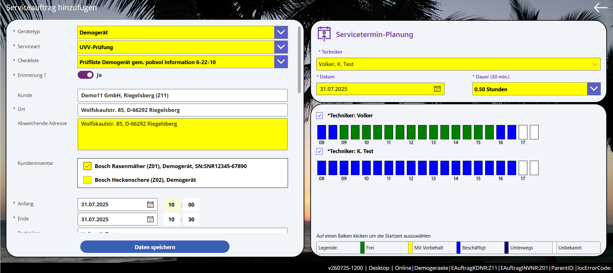
Im linken Bereich werden die Daten des Serviceauftrags / der Erinnerung angezeigt und bearbeitet. Im rechten Bereich erfolgt die Planung. Hier werden bis zu drei (3) Techniker ausgewählt, sowie das Datum und die Dauer des Technikereinsatzes bestimmt. Danach wird die Verfügbarkeit der Techniker angezeigt und die Startzeit ausgewählt.
Gerätetyp: ist vorbelegt, kann aber geändert werden, wenn denn Inventar eines anderen Typs vorhanden ist.
Serviceart: ist vorbelegt, kann aber geändert werden, wenn dem Gerätetyp weitere Servicearten zugeordnet wurden. Welche Servicearten verfügbar sind, hat Ihr Admin bei der Installation der Lösung festgelegt.
Checkliste: ist vorbelegt, kann aber geändert werden, wenn dem Gerätetyp und der gewählten Serviceart weitere Checklisten zugeordnet wurden. Welche Checklisten verfügbar sind, hat Ihr Admin bei der Installation der Lösung festgelegt.
Auftrag oder Erinnerung? Standardwert ist Erinnerung. Soll ein Serviceauftrag erstellt werden, dann muss dieses Feld auf Nein gesetzt werden. Dadurch wird beim Speichern zusätzlich ein Outlook-Kalendereintrag
erstellt und der/die Techniker und der Kunde werden per E-Mail über den Termin informiert. Ob Kunden per E-Mail über Termine informiert werden, hat Ihr Admin bei der Installation der Lösung festgelegt.
Kunde: ist vorbelegt. Angezeigt wird der Kundenname, der Kundenort und die Kundennummer. Änderungen sind nicht möglich.
Ort: ist vorbelegt. Angezeigt wird die Kundenadresse. Änderungen sind nicht möglich.
Abweichende Adresse: Falls das Gerät nicht an seinem üblichen Ort zu finden ist, kann eine abweichende Adresse eingeben werden. Diese wird dann im Feld Ort angezeigt.
Kundeninventar: Das gewählte Inventar ist ausgewählt und damit dem Auftrag / der Erinnerung zugeordnet. Wird weiteres Inventar gelistet, kann dieses hinzugefügt und auch wieder entfernt werden.
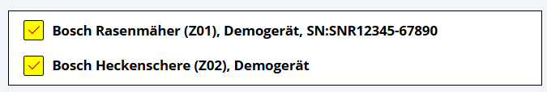
Anfang, Ende, Techniker: können nicht direkt bearbeitet werden. Im rechten Bereich, in der Servicetermin-Planung, bis zu drei Techniker zuordnen, das gewünschte Datum auswählen und die Dauer des Servicevorgangs festlegen. Die Standardtermindauer für die Servicearten und Gerätetypen wurde von Ihrem Admin bei der Installation der Lösung festgelegt. Die Dauer wird vorbelegt mit der Standarddauer pro zugeordnetem Inventar.
Um die Anfangszeit festzulegen, im Bereich Verfügbarkeit auf den entsprechenden Balken klicken. Danach sind Anfangszeit, Endezeit und Techniker eingetragen.
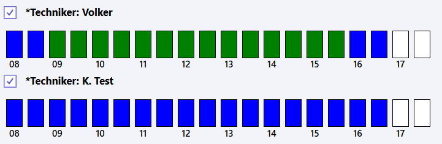
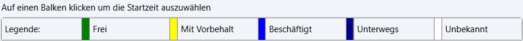
Auftragsdaten: Bestelldatum, Bestellung durch und falls bekannt, die Kundenauftragsnummer eingeben.
Anlagen: Es können eine oder mehrere Dateien als Anlage(n) hinzugefügt werden. Anlagen verbleiben auf dem SharePoint. Diese werden nicht in dem Outlook-Kalendereintrag gespeichert! Der Zugriff auf die Anlagen erfolgt über die Apps
pssService Board und
pssServicePhone.
Beschreibung: Etwas nach unten scrollen, um die Beschreibung zu sehen. Änderungen sind nicht möglich. Der Aufbau der Beschreibung wurde von ihrem Admin bei der Installation der Lösung festgelegt.
Zum Schluss "Daten speichern" wählen. Der neue Auftrag / die neue Erinnerung wird im Screen "Serviceaufträge" angezeigt.
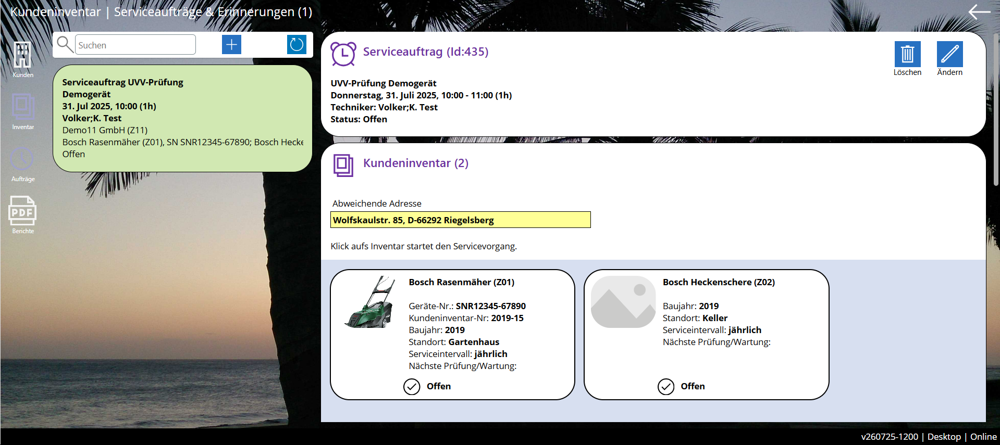
Serviceauftrag in Outlook
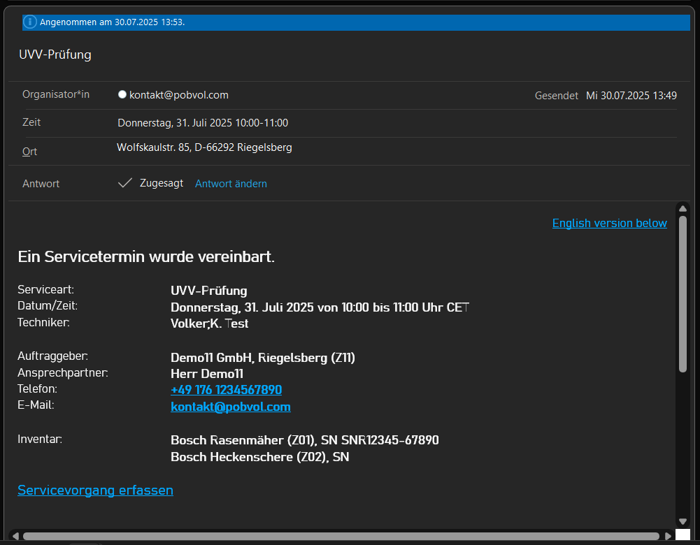
Wird ein Serviceauftrag in Outlook geöffnet, können alle Möglichkeiten des Button
Antworten genutzt werden, die Outlook bietet (Zusagen, Mit Vorbehalt, Ablehnen, Andere Zeit vorschlagen, Antworten).
Wichtig: Wird der Termin abgelehnt, dann muss ein Benutzer der App-Benutzergruppe "Serviceaufträge" den Serviceauftrag anpassen und einen anderen Techniker zuordnen.
Wichtig: Wird eine andere Zeit vorgeschlagen, dann muss ein Benutzer der App-Benutzergruppe "Serviceaufträge" das Startdatum in dem Serviceauftrag anpassen.